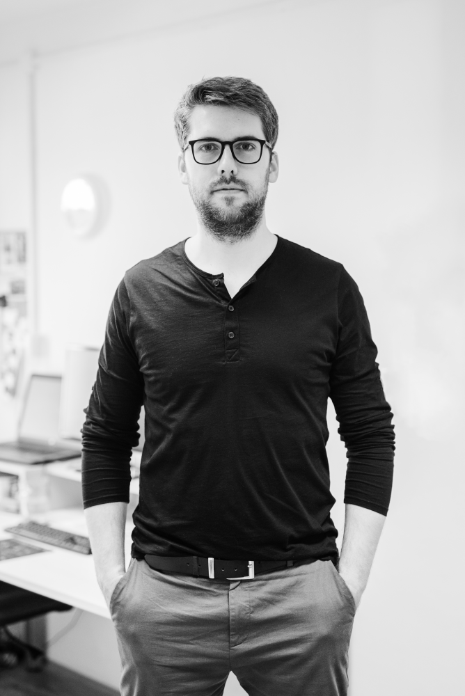
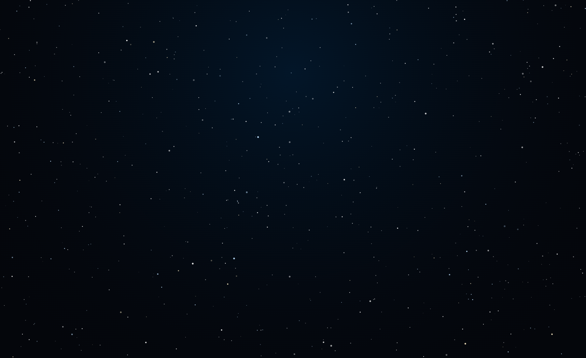

RNDr. Šimon Mackovjak, PhD.
Head of Department · scientific cooperation, ESA projects
mackovjak@saske.sk
We are the Department of Space Physics — known publicly as SPACE::LAB. We conduct space science research and develop spaceborne instruments in Košice, and operate continuous measurements at Lomnický štít, 2634 m above sea level.
Department of Space PhysicsInstitute of Experimental Physics
Slovak Academy of Sciences
Bulharská 2
040 01 Košice, Slovakia
For research collaboration, instrument development, data access, student projects or media enquiries.

Head of Department · scientific cooperation, ESA projects
mackovjak@saske.skSenior Scientist · contact for media · public information officer
bobik@saske.skKošice-Železničná stanica is about 2 km away. Take tram 1, 3, 4 or 7 towards Stará nemocnica or Ryba, or walk in roughly 25 minutes.
Stará nemocnica — trams 1, 3, 4, 7; buses 12, 15, 16, 54.
Ryba — trams 1, 3, 4, 7; buses 24, 30. Both stops are a short walk from Bulharská 2.
Enter Bulharská 2, Košice into your navigation. During SPACE::TALK meetups parking is available inside the institute grounds — the entrance is at the end of Pekná street, on the right.
The airport (KSC) is about 6 km from the institute, with direct connections to Vienna, Prague, Warsaw and other hubs. A taxi takes around 15 minutes.
The laboratory at 2634 m is reached by cable car from Tatranská Lomnica via Skalnaté pleso. Access is restricted — arrange a visit in advance with the research operations manager.
Social Networks
Follow us